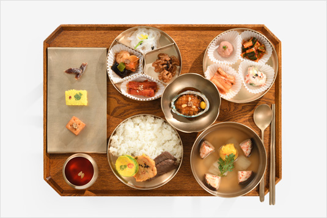
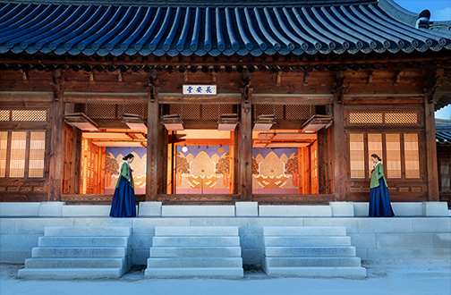
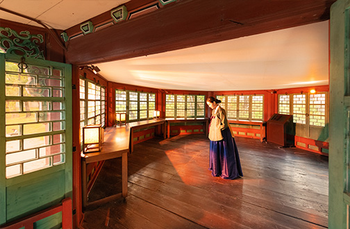

-경복궁 생과방-
경복궁 소주방 전각에 위치한 ‘생과방’은 궁중의 육처소(六處所) 가운데 하나이며,
‘국왕과 왕비’의 후식과 별식을 준비하던 곳으로 ‘생물방’ 혹은 ‘생것방’이라고도 불렸습니다.
경복궁 생과방 프로그램은 조선왕조실록의 내용을 토대로 실제 임금이 먹었던 궁중병과와 궁중약차를 오늘날에도 즐길 수 있도록 구성된 유료 체험 프로그램 입니다.
생과방 내부에 위치한 호궤소에서 궁중병과와 궁중약차 메뉴를 직접 선택한 후 안내에 따라 궁중다과를 시식·체험할 수 있습니다.
프로그램 소개
드시다 (궁중병과)
|  | |||||
| 구선왕도고 | 주악 | 호두정과 | 약과 | 사과정과 | 매작과 |
마시다 (궁중약차, 과일차)
|  |  |  |
 |
 |
 |
| 강계다음 | 삼귤다 | 감국다 | 담강다 | 오미자 | 제호차 |